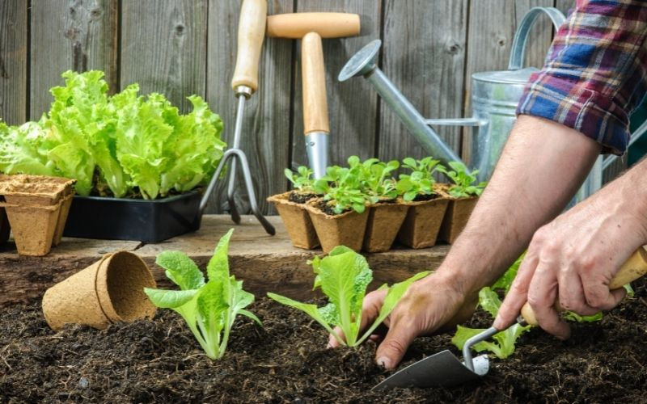

Six-Month Courses
- First Aid
- Sewing
- Landscaping
- Life Skills
- Child minding
- Cooking
- Garden maintenance
This training provides fundamental first aid information that can save lives in commonplace circumstances. Techniques for responding to emergencies,
such as treating cuts, burns, and fractures, will be taught to learners.
Important techniques like managing respiratory distress (such as choking
or restricted airways) and performing cardio-pulmonary resuscitation (CPR) are discussed.
Graduates will become important members of any home or workplace as they acquire the self-assurance and emergency crisis management skills.
Highlights of the course:
o Management of wounds and bleeding
o Treatment for fractures and burns
o Management of emergency scenes
o CPR, or cardiopulmonary resuscitation
o Handling respiratory distress, such as choking or clogged airways
Students who complete this course will be able to change and tailor clothing, which is a necessary skill in both home and work environments. From comprehending different sorts of stitches to operating a sewing machine, participants will obtain practical knowledge that can be transformed into a profitable business. Graduates will be qualified to provide tailoring services, ranging from simple adjustments to the design and production of brand-new clothing.
Highlights of the course:
o Stitch types and sewing machine threading
o Stitching seams, hems, buttons, and zippers
o Modifications to apparel
o Designing and sewing new outfits
This course offers an overview of garden design and landscaping with an emphasis on both native and exotic plants. The course will teach participants how to design visually appealing and well-balanced garden layouts that include elements like benches, statues, and fountains. Perfect for aspiring gardeners looking to launch their own landscaping company, or for housekeepers looking to expand their skill set to include professional garden management.
Highlights of the course:
o An understanding of both native and foreign trees and plants
o Fixed structures, such as statues, benches, and fountains
o Design of garden layout
o The aesthetics of the colours and forms of plants
o Harmonizing garden components for aesthetic appeal
Life Skills Training gives you the fundamental information you need to face everyday obstacles head-on. This course covers fundamentals such as creating a bank account, comprehending labor regulations, and developing reading and numeracy literacy. Giving students these talents will enable them to take control of their money, rights, and communication skills in both their personal and professional lives.
Highlights of the course:
o Setting up and overseeing a bank account
Comprehending fundamental labor laws (be aware of your rights)
o Fundamental skills in writing and reading
o Basic knowledge of numbers

Six-Week Short Courses
The focus of this course is on caring for young children, from babies to toddlers. The unique needs of infants and young children at various developmental stages, from birth to toddlerhood, will be covered in the training for participants. Graduates of this programme will be qualified to operate as professional childminders, guaranteeing the security and welfare of the kids under their supervision.
Highlights of the course:
o Having knowledge of the requirements of infants (birth to six months)
o Providing for infants from seven months to a year
o Taking care of the needs of toddlers (up to 3 years old)
o Assisting children's growth with educational toys
This course offers hands-on instruction in cooking wholesome, balanced meals for the family. Students will comprehend meal planning, how to prepare different foods, and the nutritional needs for a healthy body. Graduates will be qualified to work as professional chefs or add healthy meal preparation to their domestic service offers.
Highlights of the course:
o The foods a body needs to stay healthy
o Vegetables, grains, and protein varieties
o Arranging and preparing meals
o Making and preparing wholesome meals
This course provides hands-on experience in household garden maintenance, emphasizing plant propagation, pruning, and watering. To ensure that both native and exotic plants flourish in the garden, participants will learn how to properly care for them. Graduates will be equipped to take care of their own gardens or provide professional garden maintenance services.
Highlights of the course:
o Limitations and requirements for watering both native and exotic plants
o Plant propagation and pruning methods
o Planting strategies for various kinds of plants